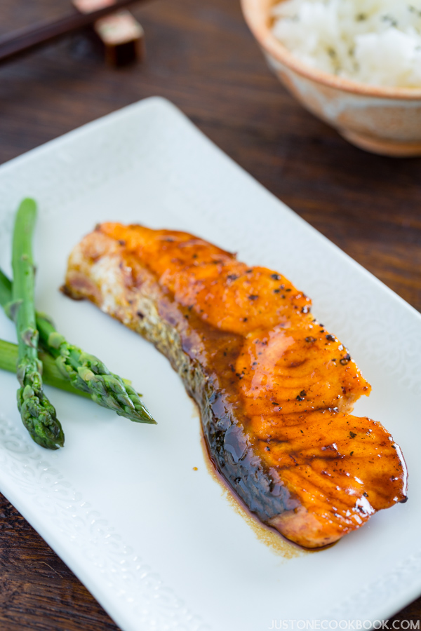
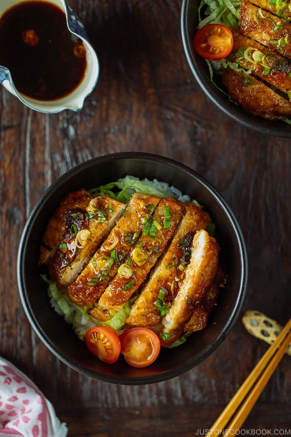
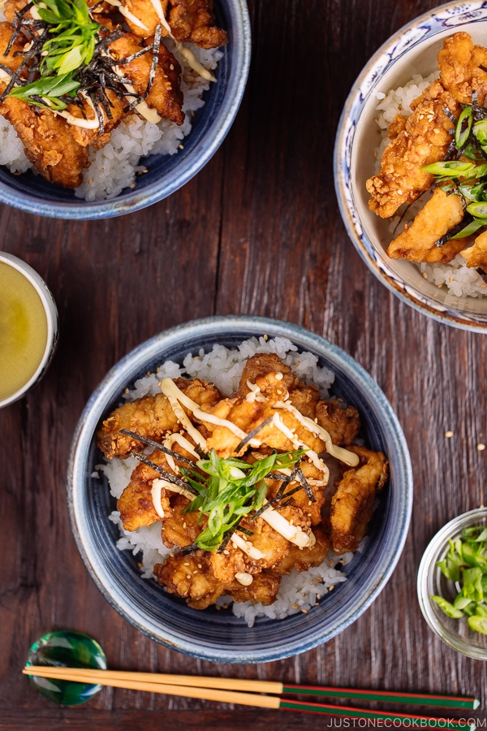

I am a student fresh out of business school! I am currently attending the Le Wagon bootcamp in Berlin, and it's Awsome ! I also love to cook, especialy japanese cuisine, since it's nice, usually healthy and delicious!
See for yourself|  |
Teriyaki SalmonQuick and delicious! This authentic recipe is a nice alternative to meat based dishes. |
|  |
Teriyaki PorkQuick, easy, and delicious Teriyaki Pork Donburi. There’s protein, carb, and salad layered in a bowl. A perfect one-pan and one-bowl meal for weeknight dinner. |
|  |
Chicken Karaage DonburiCrispy, juicy fried chicken served on a bed of tender rice. The chicken is marinated in a Chinese seasoning of soy sauce, ginger, sweet bean sauce, and sesame oil before frying to golden and coated with a savory scrumptious sauce. |
This page has been coded during the FullStack program @LeWagon. That was probably the best experience of my entire life.